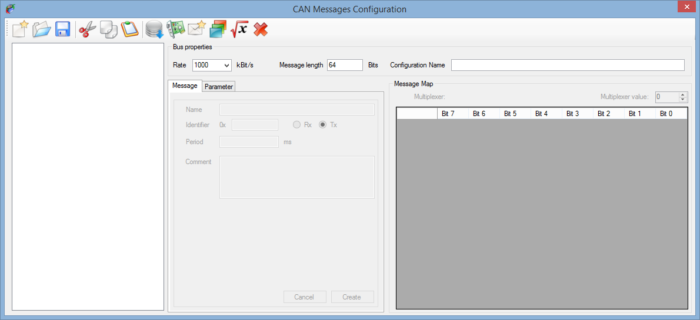

To create a CAN configuration, click on the ‘CAN Configuration' menu of the menu strip and then click on ‘New'.

The CAN configuration editor should appear as bellow.

The CAN configuration editor contains several things:
All edition functions of a CAN configuration are available in the tool bar.
 New: Create a new CAN configuration.
New: Create a new CAN configuration.
 Open: Open an existing CAN configuration for edition.
Open: Open an existing CAN configuration for edition.
 Save: Save the current CAN configuration into a file.
Save: Save the current CAN configuration into a file.
 Cut: Cut an element of the CAN configuration and place it on the clipboard.
Cut: Cut an element of the CAN configuration and place it on the clipboard.
 Copy: Copy an element of the CAN configuration to the clipboard.
Copy: Copy an element of the CAN configuration to the clipboard.
 Past: Past an element of the CAN configuration from the clipboard.
Past: Past an element of the CAN configuration from the clipboard.
 DBC Import: Import a DBC file in the current CAN configuration.
DBC Import: Import a DBC file in the current CAN configuration.
 New CAN controller: Add a CAN controller to the current CAN configuration.
New CAN controller: Add a CAN controller to the current CAN configuration.
 New CAN message: Add a CAN message to the CAN configuration.
New CAN message: Add a CAN message to the CAN configuration.
 New CAN parameter: Add a CAN parameter to the current CAN message.
New CAN parameter: Add a CAN parameter to the current CAN message.
 New virtual CAN parameter: Add a virtual CAN parameter to the current CAN message.
New virtual CAN parameter: Add a virtual CAN parameter to the current CAN message.
 Delete: Delete an element of the CAN configuration.
Delete: Delete an element of the CAN configuration.
Created with the Personal Edition of HelpNDoc: Easily create iPhone documentation